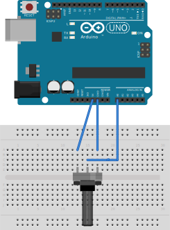
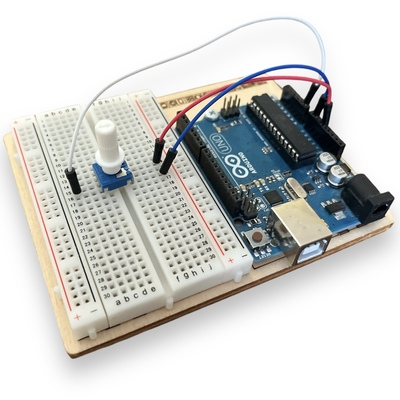

Célérité des ultrasons dans l'air.
Démo - Mode point
Visualisation d'une tension en fonction d'une grandeur arbitraire X
Matériel nécessaire
- Un potentiomètre
- Une carte Arduino équipée d'une breadboard
- Quelques fils
Montage
Sur une carte Arduino, réaliser le montage suivant:


Script Arduino
- Télécharger le script potentiometre_point.ino en cliquant sur le lien
- Téléverser ce script dans la carte à l'aide de l'IDE Arduino
Utilisation
- Cliquer sur le bouton Connexion ci-dessous et sélectionner le port correspondant à la carte.
- Saisir une valeur de la grandeur arbitraire X dans le champ de saisie.
- Cliquer sur le bouton Mesure. La carte effectue alors la mesure de la tension appliquée U sur l'entrée analogique A0. Le point de cooordonnées (X, U) est placé sur le graphe U = f(X).
- Lorsque les mesures sont terminées, cliquer sur le bouton Copie presse papier pour récupérer les données dans le presse papier. Dans cet exemple, les données sont formatées sous forme de tableaux python. Il est cependant possible d'obtenir un formatage compatible avec un tableur comme Régressi ou Excel.
- Code Javascript
Le code Javascript nécessaire à cette application est le suivant:
mode = "point"; commandes = [{texte_bouton:"Mesure", arduino:"mesure"}]; series = [{grandeur: "U", unite: "V"}]; titre_graphe = "Montage potentiométrique"; axes = [{grandeur: "X", unite: "Sans"}, {grandeur: "U", unite: "V"}];